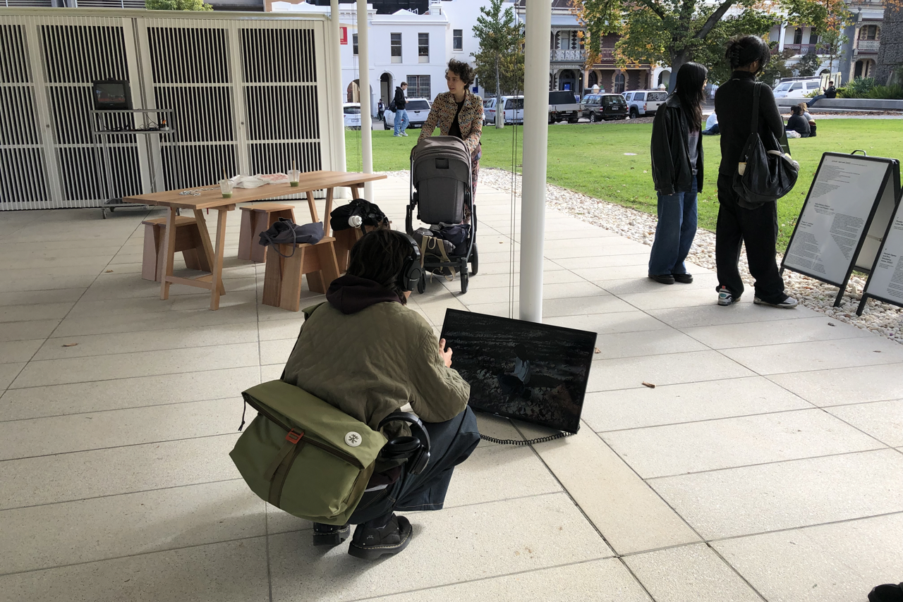
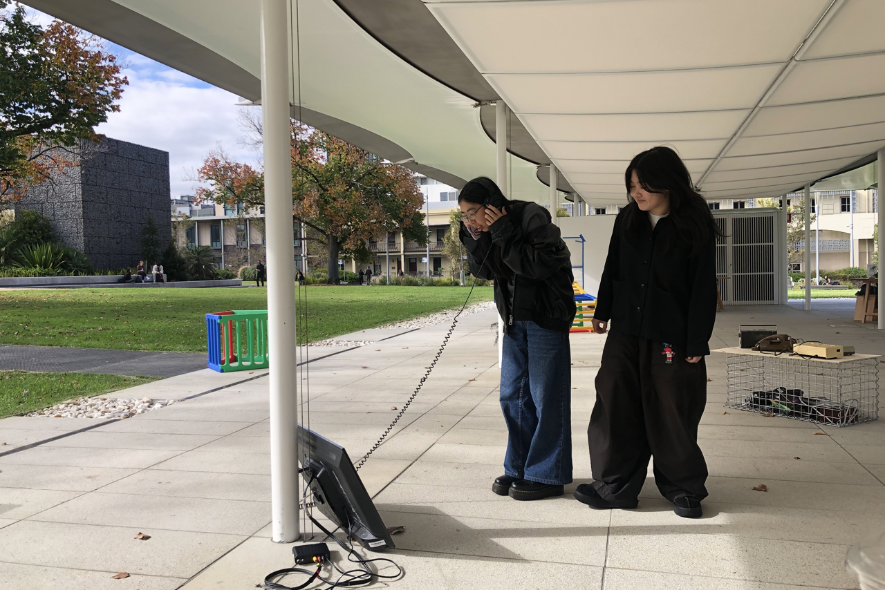
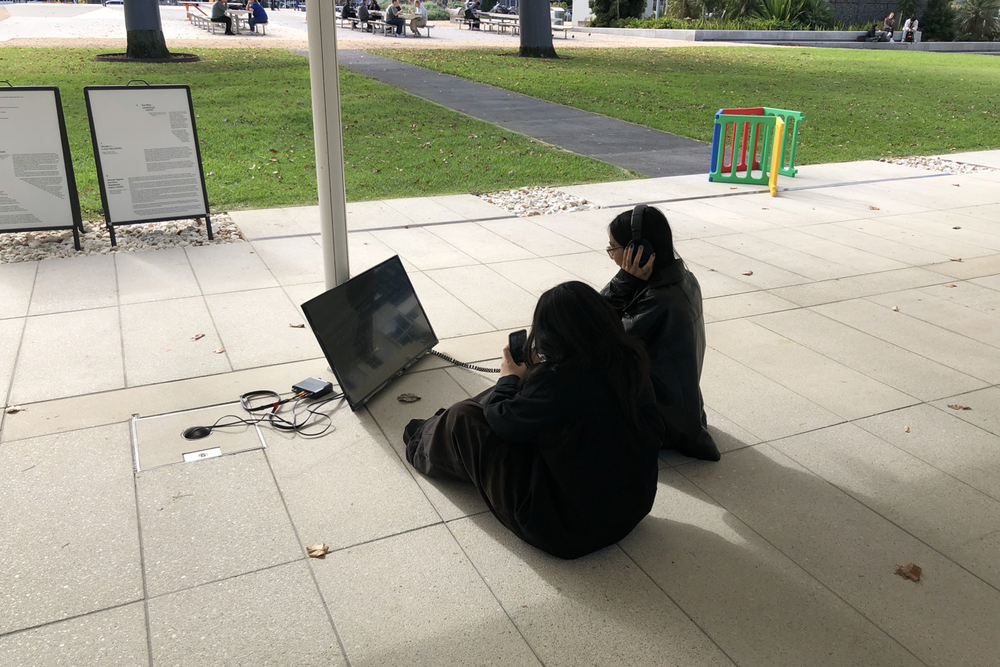
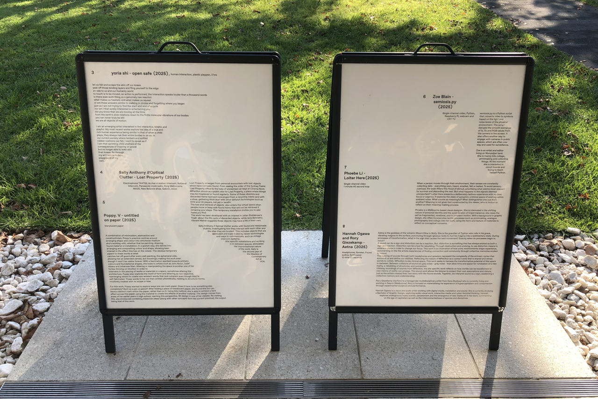
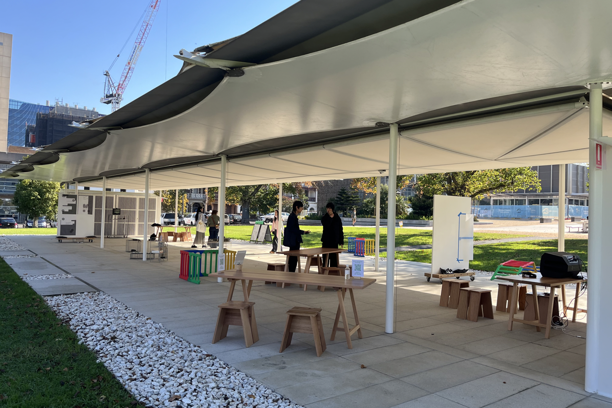
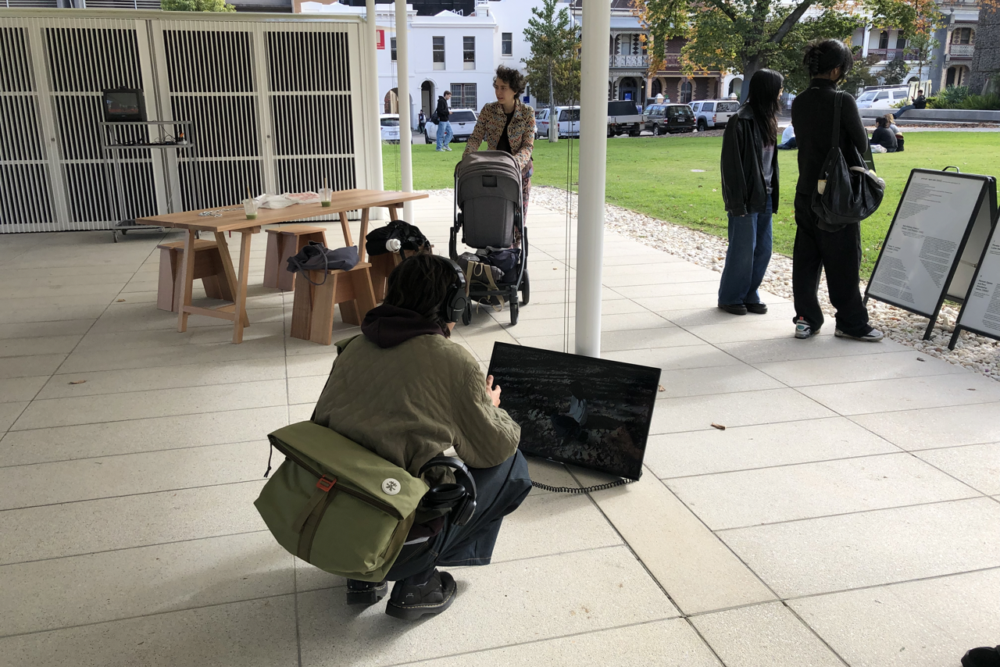
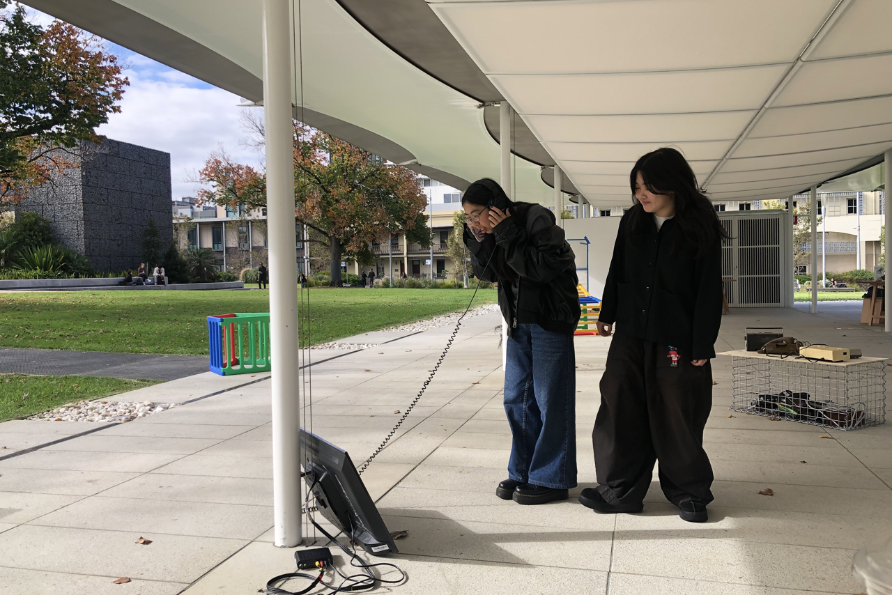
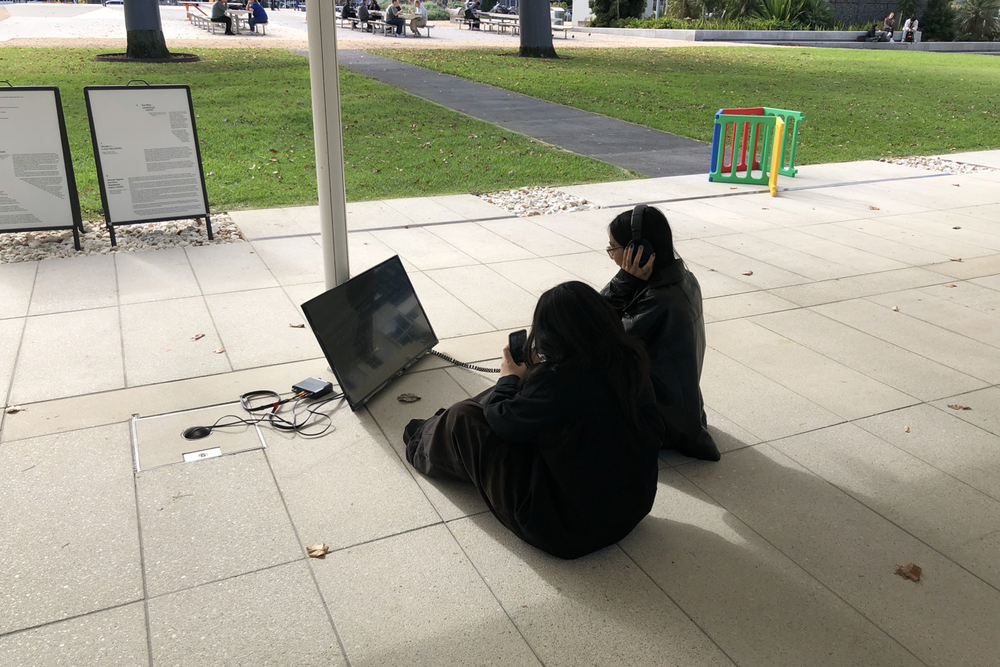
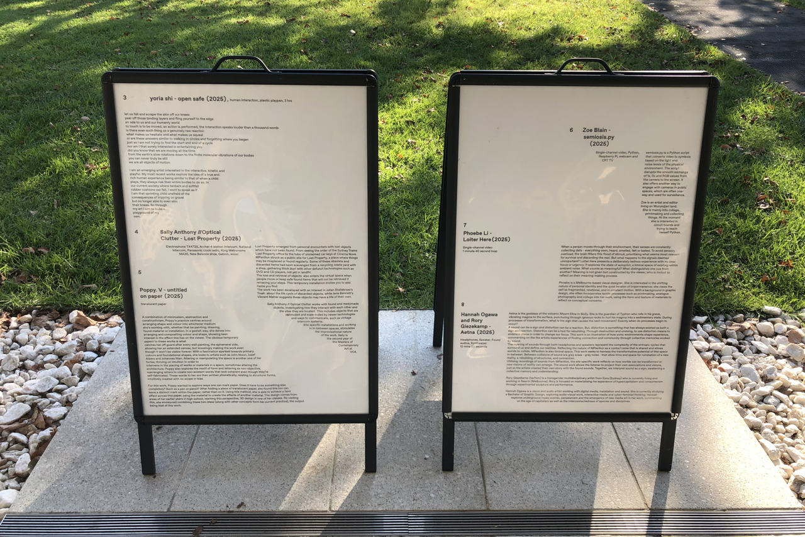
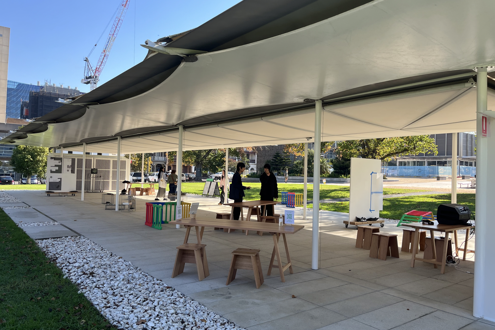

Phoebe Li Portfolio
Application for MC250
Master of Communication Design
Semester 2, 2025
LOITER HERE
Next: (Re)defining the Narrative
Previous: Sunburn
Motion
Sound design
A site-specific short film presenting a deliberately tedious experience with no clear focus. A person's senses are constantly collecting data; to avoid sensory overload, the brain filters this flood of stimuli, prioritising what seems most relevant for survival and discarding the rest. But what happens to the signals deemed unimportant? Loiter Here explores the state of autopilot, a liminal space of existing within ambient noise. What counts as meaningful? What distinguishes one cue from another? Viewers are invited to reflect on their meaning-making process. Exhibited at MPavillion Parkville for Sēmeíōsis, part of the Melbourne Design Week 2025 program. View exhibition info here.
 








